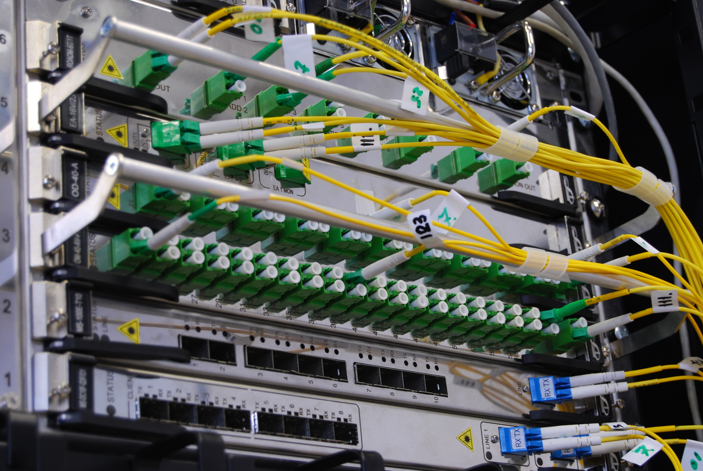

¿Qué se conserva?
- La temática del curso
- Tablas, listas, imágenes y enlaces
- El propósito académico de demostración
- La posibilidad de inspeccionar el código fuente
Comparativa visual
La estructura HTML sigue siendo fundamental, pero aquí se presenta sin una hoja de estilos para que el estudiante observe el antes del diseño visual.
Esta asignatura estudia la comunicación entre sistemas, la arquitectura de Internet, el direccionamiento IP y los principales protocolos de transporte y aplicación.
En la parte práctica, los estudiantes trabajan con simuladores, máquinas virtuales y diferentes servicios de red para comprender, a través de la experimentación, el funcionamiento real de la conectividad.
Esta sección presenta correctamente palabras como presentación, configuración, conexión, académico y múltiples para facilitar la comparación visual con la versión corregida.
Resumen académico
INTERNET: Redes y Comunicaciones IP aborda la comunicación entre sistemas, la pila de protocolos, el direccionamiento lógico y los servicios que soportan aplicaciones de uso cotidiano.
En el laboratorio, estos conceptos suelen apoyarse con simuladores, máquinas virtuales y servicios básicos desplegados por el estudiante.

| Tema | Pregunta orientadora | Resultado esperado |
|---|---|---|
| Modelo OSI | ¿Qué función cumple cada capa? | Reconocer el proceso de encapsulamiento |
| IPv4 / IPv6 | ¿Cómo se identifican los hosts? | Asignar direcciones correctamente |
| TCP y UDP | ¿Cuándo conviene cada protocolo? | Diferenciar confiabilidad y velocidad |
| Servicios de red | ¿Cómo operan DNS, HTTP y DHCP? | Relacionar servicio, puerto y función |





Compare esta página con la versión HTML + CSS y observe cómo la estructura puede mantenerse, mientras que CSS transforma la presentación visual sin cambiar el sentido académico del contenido.